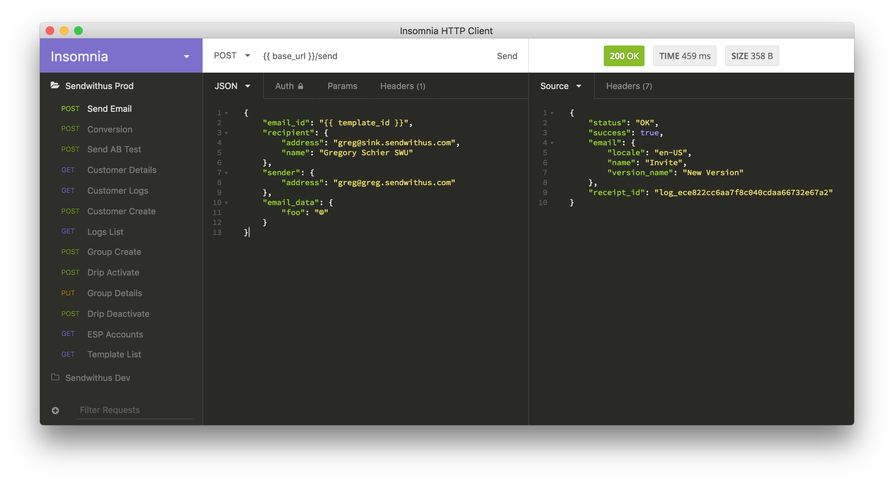

Insomnia HTTP Client
Welcome to the documentation site for Insomnia. Insomnia is a beautiful cross-platform application for organizing, running, and debugging HTTP requests.

Backstory and History
I started Insomnia in January of 2015. I was helping build the API platform for (Sendwithus) at the time, so a large part of my day-to-day was interacting with HTTP APIs.
Before Insomnia, I used curl to test the API features being worked on.
However, it was painful to build a new command for every test case, so I eventually ended up with
a messy folder of scripts that looked something like this.
curl-commands/
├── send-email.sh
├── send-email-bad-data.sh
├── update-customer.sh
├── ...
└── create-email-template.shIt started off manageable, but slowly turned into a nightmare. Doing something trivial like changing the API key that was being sent sometimes meant modifying every file. Sure, I could have used an environment variable for that, but what if I wanted to change something else? Finally, after a lot of pain, I realized there was probably a better way.
I eventually stumbled upon the world of REST Clients. These were usually poorly designed (my opinion) web apps built to solve this exact problem. So, I tried them. All of them. And, after a few days, still didn't find one that I liked. So I wrote my own.
The first version was built from a $15 ThemeForest theme, a couple hundred likes of JQuery, and was distributed via the Chrome Web Store. It was horrible but it worked, and slowly evolved to where it is today.
You can download Insomnia today by visiting http://insomnia.rest.
Thanks for reading, and I hope you enjoy the app!
~ Gregory